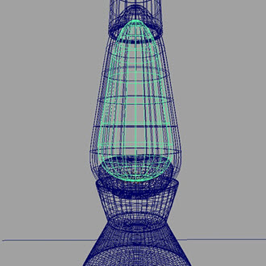

对玻璃和液体进行建模
提示：
请确保准确建立有厚度的玻璃曲面模型。否则，玻璃将不能正确渲染。
要使用 Arnold 准确渲染折射曲面，重要的是模型要遵循一定的准则：
- 空气到玻璃曲面（折射率为 1.5）的法线指向玻璃外面，覆盖空气与玻璃直接接触的区域。
- 玻璃到液体曲面（折射率为 1.33）的法线指向液体外面，覆盖空气与液体直接接触的区域。
| 玻璃碗法线方向 | 液体法线方向 |
一条光线在空气（折射率为 1.0）中传播，进入玻璃，然后按玻璃的折射率 (1.5) 发生折射。光线在玻璃中传播后，离开玻璃并进入液体，即从一种折射率为 1.5 的介质传播到另一种折射率为 1.33 的介质中。
玻璃曲面模型
下面是一个简单的玻璃碗模型。可以看到在右图中，网格的法线都正确地指向外部。在使用 Arnold 渲染折射对象时，正确的法线方向非常重要。
 |
 |
曲面法线指向外部
对液体进行建模 - 重合曲面
在下面的示例中，玻璃和液体的曲面彼此重叠，因此是重合的。渲染器无法分辨两个曲面，输出效果将为重叠的伪影。
玻璃与液体曲面重合
缩小液体
在本例中，液体比例稍微有所下调。玻璃与液体之间的间隙很小。生成的渲染看起来不真实。
液体比例下调（看起来不正常）
放大液体
下面液体的比例有所增大，从而与玻璃碗几何体发生重叠。这样看起来好得多，因为液体看起来是与玻璃接触的。
液体比例增大
注意，尽管这种建模方法“看起来”没错，但应注意这并不是基于物理的方法。一般来说，对象的建模应尽可能真实，以便在使用 Arnold 渲染时得到正确的结果。
示例 2
在下面的示例中，玻璃和液体的曲面彼此重叠，因此是重合的。您可以看到右图中存在错误，这是因为渲染器在分辨每个曲面时遇到问题。
玻璃与液体曲面重合
在本例中，液体比例稍微有所下调。玻璃与液体之间的间隙很小。生成的渲染看起来不真实。
|  |
液体比例下调
下面液体的比例有所增大，从而与玻璃几何体发生重叠。这样看起来好得多，因为液体看起来是与玻璃接触的。
液体比例增大